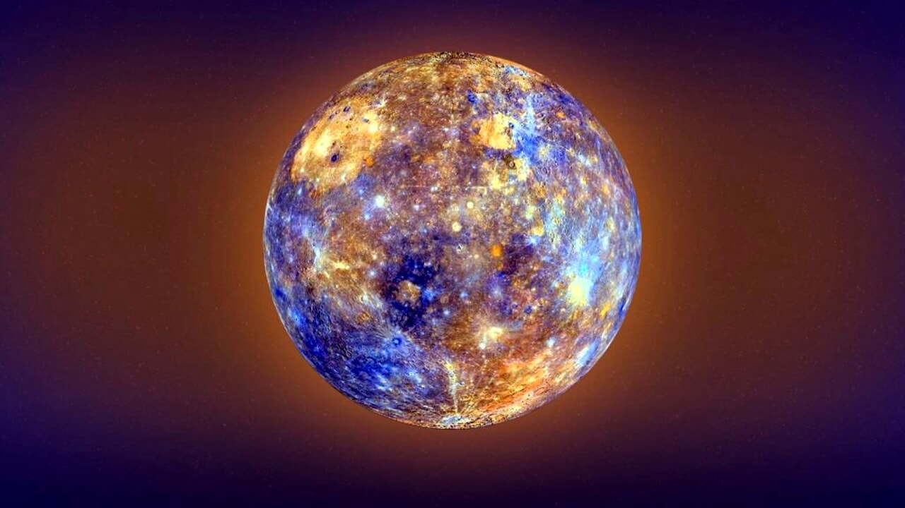

MERCURIO
Mercurio è il pianeta più vicino al Sole, da cui dista in media poco meno di 58 milioni di km. Il suo diametro, pari a circa 1/3 di quello terrestre, è di 4.878 km. Percorre la sua orbita in appena 88 giorni terrestri, mentre gira molto lentamente su sé stesso: per compiere una rotazione attorno al suo asse impiega circa 59 giorni terrestri. Malgrado la sua grande somiglianza con la Luna, Mercurio è molto più denso: infatti secondo gli astronomi è composto da un grosso nucleo di ferro, parte del quale forse allo stato liquido, con un raggio di 1.800-1.900 km, che contiene circa l’80% della massa del pianeta. Questo nucleo è circondato da un mantello e da una crosta simili a quelli della Terra e di spessore complessivo pari a 500-600 km.
Mercurio è praticamente privo di atmosfera. Durante il giorno le regioni vicine all’equatore raggiungono temperature di 430 °C, che la notte scendono sotto i -185 °C. Questa grande differenza fra il giorno e la notte si deve proprio alla mancanza di un’atmosfera che, come quella terrestre, per la sua capacità di trattenere il calore, attenui cambiamenti di temperatura troppo bruschi.
